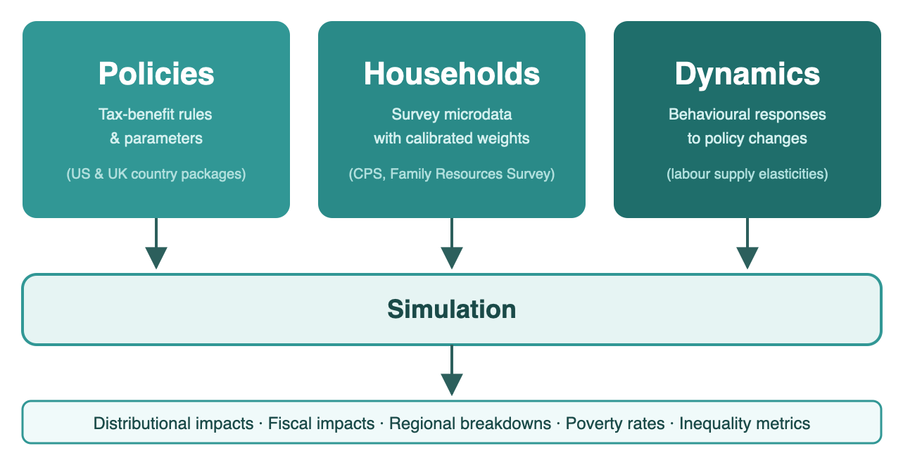

Summary
PolicyEngine.py (PolicyEngine Contributors 2026) is an open-source, multi-country microsimulation framework for tax-benefit policy analysis, implemented in Python. The package provides a unified interface for running policy simulations, analyzing distributional impacts, and visualizing results across the US and the UK. It delegates country-specific tax-benefit calculations to dedicated country packages (policyengine-us and policyengine-uk) while providing shared abstractions for simulations, datasets, parametric reforms, and output analysis. The framework supports both individual household simulations and population-wide microsimulations using representative survey microdata with calibrated weights. PolicyEngine powers an interactive web application at policyengine.org that enables non-technical users to explore policy reforms in both countries.
Statement of Need
Tax-benefit microsimulation models are essential tools for evaluating the distributional impacts of fiscal policy. Governments, think tanks, and researchers rely on such models to estimate how policy reforms affect household incomes, poverty rates, and government budgets. However, existing models face significant access barriers. TAXSIM (Feenberg and Coutts 1993) at NBER computes only tax liabilities and omits the benefit side of the ledger entirely. The models maintained by the Congressional Budget Office and the Tax Policy Center are fully proprietary and unavailable to external researchers. In the UK, UKMOD (Sutherland and Figari 2013), maintained by the University of Essex, requires a formal application and institutional affiliation to access, and the models maintained by HM Treasury and the Institute for Fiscal Studies are similarly proprietary.
PolicyEngine addresses these gaps by providing an open-source Python microsimulation framework that spans multiple countries under a consistent API. Users can supply their own microdata or use built-in datasets, and compute the impact of current law or hypothetical reforms, including parametric changes to existing policy parameters and structural modifications to the tax-benefit system, on any household or a national population. The Simulation class supports individual household analysis, while population-level aggregate analysis uses representative survey datasets with calibrated weights. The framework’s open development on GitHub enables external validation, community contributions, and reproducible policy analysis across countries.
State of the Field
Tax-benefit microsimulation, pioneered by Orcutt (1957) and surveyed by Bourguignon and Spadaro (2006), underpins much of modern fiscal policy evaluation. In the US, TAXSIM (Feenberg and Coutts 1993) at the National Bureau of Economic Research provides tax calculations, while the Congressional Budget Office and Tax Policy Center maintain proprietary models. In the UK, the primary microsimulation models include UKMOD, maintained by the Institute for Social and Economic Research (ISER), University of Essex, as part of the EUROMOD family (Sutherland and Figari 2013), and proprietary models maintained by HM Treasury and the Institute for Fiscal Studies. OpenFisca (OpenFisca Contributors 2024) pioneered the open-source approach to tax-benefit microsimulation in France. PolicyEngine originated from OpenFisca and builds on this foundation through the PolicyEngine Core framework (Woodruff et al. 2024).
The country packages already support direct microsimulation analysis, and many one-off weighted calculations can be written against those APIs alone. PolicyEngine.py was introduced for a different need: a reusable analyst-facing layer for workflows that recur across projects and countries. In practice, these include harmonized dataset management, a stable baseline-versus-reform pattern, structured output types for distributional and regional analysis, and interfaces suitable for downstream dashboards and reports. This design lets country model packages focus on statutory rules while shared analysis methods evolve independently.
PolicyEngine.py differentiates itself in several ways:
- Cross-country analyst workflow: a single package
provides shared
Simulation,Policy, and dataset-management patterns for analogous UK and US analyses, despite differences in the lower-level country-package APIs. - Standardized reform-analysis outputs: reusable
functions and objects such as
economic_impact_analysis(),ChangeAggregate, poverty and inequality metrics, and geographic impact outputs replace repeated project-specific grouping and weighting code. - Separated modeling, analysis, and data layers: the project splits reusable engine logic into PolicyEngine Core, analyst workflows into PolicyEngine.py, country legislation into policyengine-us and policyengine-uk, and enhanced survey microdata into companion repositories (Woodruff et al. 2024; Woodruff and Ghenis 2024). This separation allows each layer to be versioned and updated independently as legislation, methodology, and microdata change.
Software Design
PolicyEngine is built as a four-layer system. PolicyEngine Core
provides reusable simulation abstractions, versioned parameters, and
dataset interfaces shared across countries (Woodruff et al. 2024). The
policyengine-us and policyengine-uk packages contain statutory logic,
variables, and entity structures specific to each tax-benefit system.
PolicyEngine.py sits above them as the analysis layer: it defines shared
simulation orchestration, structured output types, and canonical
baseline-versus-reform workflows such as
economic_impact_analysis(). Companion data repositories
hold enhanced survey microdata and calibration pipelines for the CPS
(Woodruff
and Ghenis 2024) and Family Resources Survey. Figure 1
illustrates this architecture.

This split reflects a deliberate trade-off. The project could have kept analysis code inside each country package or inside downstream application repositories, but that would duplicate methodology and make cross-country work harder to keep aligned. By extracting repeated analyst tasks into PolicyEngine.py, the project centralizes distributional methods while leaving legislative implementation in the country packages. The cost is added package coordination and a clearer interface boundary across repositories.
As shown in Figure 1, at runtime a simulation combines a country model version, household microdata, and optional reform or dynamic-response inputs. The same layer then exposes reusable outputs for decile changes, program statistics, poverty, inequality, and regional impacts, which are consumed by examples, research scripts, and the public web application.
PolicyEngine does not include an underlying macroeconomic model in its microsimulation analysis and does not capture general equilibrium effects.
Research Impact Statement
PolicyEngine has demonstrated research impact across government, academia, and policy research in both the US and the UK.
Government adoption. In the UK, co-author Nikhil Woodruff served as an Innovation Fellow in 2025–2026 with 10DS, the data science team at 10 Downing Street, adapting PolicyEngine for government use (HM Government 2025). The 10DS team used PolicyEngine to estimate the impacts of policy reforms on living standards, local area incomes, and distributional outcomes. HM Treasury has formally documented PolicyEngine in the UK Algorithmic Transparency Recording Standard, describing it as a model their Personal Tax, Welfare and Pensions team is exploring for “advising policymakers on the impact of tax and welfare measures on households” (HM Treasury 2024).
Congressional and parliamentary citation. In the US, Representatives Morgan McGarvey and Bonnie Watson Coleman cited PolicyEngine’s analysis in introducing the Young Adult Tax Credit Act (H.R.7547), stating that “according to the model at PolicyEngine, 22% of all Americans would see an increase in their household income under this program, and it would lift over 4 million Americans out of poverty” (Office of Representative Morgan McGarvey 2024). In the UK, Baroness Altmann referenced PolicyEngine and its interactive dashboard during House of Lords Grand Committee debate on the National Insurance Contributions (Employer Pensions Contributions) Bill in February 2026, noting that Commons Library research using PolicyEngine provided “a useful picture of the distributional effects of raising the contribution limit” across income deciles (House of Lords 2026).
Institutional partnership. PolicyEngine and the National Bureau of Economic Research (NBER) signed a formal memorandum of understanding for PolicyEngine to develop an open-source TAXSIM emulator, a drop-in replacement for TAXSIM-35 powered by PolicyEngine’s microsimulation engine with support for Python, R, Stata, SAS, and Julia (Feenberg 2024). The Federal Reserve Bank of Atlanta independently validates PolicyEngine’s model through its Policy Rules Database, conducting three-way comparisons between PolicyEngine, TAXSIM, and the Fed’s own models (Federal Reserve Bank of Atlanta 2021). Co-author Max Ghenis and Jason DeBacker (University of South Carolina) presented the Enhanced Current Population Survey methodology at the 117th Annual Conference on Taxation of the National Tax Association (Ghenis and DeBacker 2024).
Academic research. The Better Government Lab, a joint center of the Georgetown McCourt School of Public Policy and the University of Michigan Ford School of Public Policy, collaborated with PolicyEngine on benefits eligibility research (Ghenis 2024b). Matt Unrath (University of Southern California) is using PolicyEngine in a study of effective marginal and average tax rates facing American families, funded by the US Department of Health and Human Services through the Institute for Research on Poverty (Institute for Research on Poverty 2025). The Beeck Center at Georgetown University featured PolicyEngine in research on rules-as-code for US public benefits (Kennan et al. 2023, 2025). Youngman et al. (2026) cite PolicyEngine UK’s microdata methodology in their agent-based macroeconomic model for the UK’s Seventh Carbon Budget at the Institute for New Economic Thinking, Oxford.
Policy research. In the US, the Niskanen Center used PolicyEngine to estimate the cost and distributional impacts of Child Tax Credit reform options (McCabe and Sargeant 2024). DC Councilmember Zachary Parker cited PolicyEngine’s analysis when introducing the District Child Tax Credit Amendment Act of 2023, the first local child tax credit in US history (Council of the District of Columbia 2023). Senator Cory Booker’s office embedded a PolicyEngine-built calculator on his official Senate website for the Keep Your Pay Act (Office of Senator Cory Booker 2026). In the UK, the National Institute of Economic and Social Research (NIESR) used PolicyEngine in their UK Living Standards Review 2025 (Mosley et al. 2025), and the Institute of Economic Affairs has published PolicyEngine-based analyses of employer National Insurance contributions and 2025–2026 tax changes (Woodruff 2024, 2025).
Acknowledgements
This work was supported in the US by Arnold Ventures (Arnold Ventures 2023), NEO Philanthropy (Ghenis 2024a), the Gerald Huff Fund for Humanity, and the National Science Foundation (NSF POSE Phase I, Award 2518372) (National Science Foundation 2025), and in the UK by the Nuffield Foundation since September 2024 (Nuffield Foundation 2024). These funders had no involvement in the design, development, or content of this software or paper.
We acknowledge contributions from all PolicyEngine contributors, and thank the OpenFisca community for the foundational microsimulation framework (OpenFisca Contributors 2024). We acknowledge the US Census Bureau for providing access to the Current Population Survey, and the UK Data Service and the Department for Work and Pensions for providing access to the Family Resources Survey.
AI Usage Disclosure
Generative AI tools, specifically Claude Opus 4 by Anthropic (Anthropic 2026), were used to assist with code refactoring. All AI-assisted outputs were reviewed, edited, and validated by human authors, who made all core design decisions regarding software architecture, policy modeling, and parameter implementation. The authors remain fully responsible for the accuracy, originality, and correctness of all submitted materials.